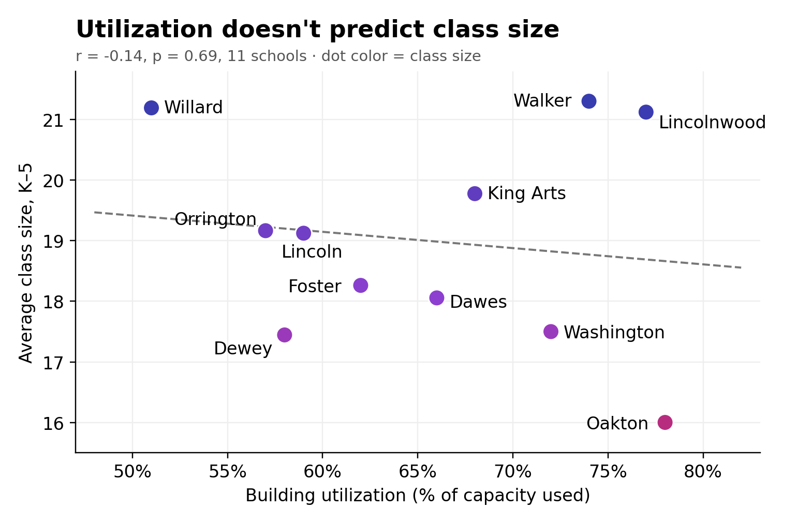
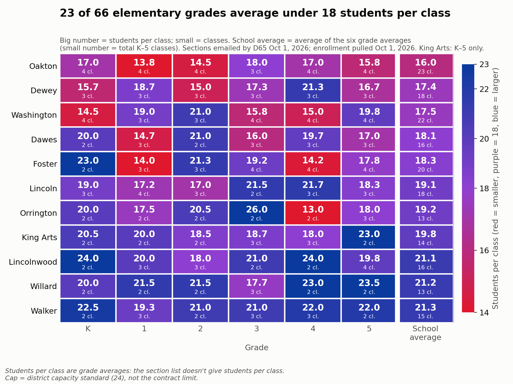

Legion of Data Nerds · D65 Building Use · Fall 2026 · Data as of 10/1/2026
Savings need to work with the district we have
District 65 is looking to cut about 10% of its budget, roughly $20 million. School closures are being treated as the main lever, but they deliver far less than that target, and the push for high utilization rests on a link that isn't in the data.
+$150–270K
Added busing per closure per year: 20–35% of the building savings
1–3.5%
Of the target from one closure: net $0.2–0.7M/yr after busing (two closures: 2–7%)
r = −0.14
Utilization vs. class size across 11 elementary schools (10/1 data): no relationship

Dots use the heatmap colors (red = smaller classes, blue = larger). The fullest building (Oakton, 78%) has the smallest classes (16.0); the emptiest (Willard, 51%) has among the largest (21.2).

Red = smaller classes, blue = larger. Class size = students per grade ÷ actual sections from the district's FY27 K–5 section list. It depends on how each grade divides into classes and on programs (TWI, ACC), not on how full the building is.
What we found
- Closures save less than they appear. Added busing takes back 20–35% of a building's savings, before moving and renovation costs.
- High-utilization buildings don't have bigger classes. Utilization explains about 2% of the difference in class size, and no more than 14% with any one school left out.
- Some of the lowest utilization is in larger buildings (Lincoln: 59% of 576 seats), space that could serve other uses.
- 23 of 66 elementary grades average under 18 students per class this fall.
- Staff time isn't counted. Closures pull attention from larger short-term savings in staffing.
Strategies to pursue alongside closures
- Creative building use: lease or share underused space, e.g. with a preschool or community partner.
- Voluntary retirement incentives, negotiated with the teachers' union: savings through attrition, not layoffs.
- TWI tuition seats for nearby communities, if possible: revenue that also fills small upper-grade classes.
- TWI strand planning: more strands in K–2, consolidating in grades 4–5.
What any savings plan should include
- Itemized savings from the Kingsley and Bessie Rhodes closures, net of the costs of opening Foster.
- The full cost of closing and relocating a school: moving, IT, closing the building, plus staff and community time.
- Renovation costs at receiving schools for programs that move (TWI, STEP, special education).
- Positions to be cut, by category, and the savings from each.
- The impact on class size: classes per grade before and after, not just utilization.
- A forward-looking case: long-term financial footing and better educational outcomes for all students.
We need to work with the buildings and the district we have: chasing an artificially high utilization rate can lead to ballooning, persistent cost increases. We are excited by the direction things are heading, and we look forward to hearing the vision for D65's future.